Rows: 4,568
Columns: 36
$ RTlexdec <dbl> 6.543754, 6.397596, 6.304942, 6.424221…
$ RTnaming <dbl> 6.145044, 6.246882, 6.143756, 6.131878…
$ Familiarity <dbl> 2.37, 4.43, 5.60, 3.87, 3.93, 3.27, 3.…
$ Word <fct> doe, whore, stress, pork, plug, prop, …
$ AgeSubject <fct> young, young, young, young, young, you…
$ WordCategory <fct> N, N, N, N, N, N, N, N, N, N, N, N, N,…
$ WrittenFrequency <dbl> 3.9120230, 4.5217886, 6.5057841, 5.017…
$ WrittenSpokenFrequencyRatio <dbl> 1.02165125, 0.35048297, 2.08935600, -0…
$ FamilySize <dbl> 1.3862944, 1.3862944, 1.6094379, 1.945…
$ DerivationalEntropy <dbl> 0.14144, 0.42706, 0.06197, 0.43035, 0.…
$ InflectionalEntropy <dbl> 0.02114, 0.94198, 1.44339, 0.00000, 1.…
$ NumberSimplexSynsets <dbl> 0.6931472, 1.0986123, 2.4849066, 1.098…
$ NumberComplexSynsets <dbl> 0.000000, 0.000000, 1.945910, 2.639057…
$ LengthInLetters <int> 3, 5, 6, 4, 4, 4, 4, 3, 3, 5, 5, 3, 5,…
$ Ncount <int> 8, 5, 0, 8, 3, 9, 6, 13, 3, 3, 1, 9, 1…
$ MeanBigramFrequency <dbl> 7.036333, 9.537878, 9.883931, 8.309180…
$ FrequencyInitialDiphone <dbl> 12.02268, 12.59780, 13.30069, 12.07807…
$ ConspelV <int> 10, 20, 10, 5, 17, 19, 10, 13, 1, 7, 1…
$ ConspelN <dbl> 3.737670, 7.870930, 6.693324, 6.677083…
$ ConphonV <int> 41, 38, 13, 6, 17, 21, 13, 7, 11, 14, …
$ ConphonN <dbl> 8.837826, 9.775825, 7.040536, 3.828641…
$ ConfriendsV <int> 8, 20, 10, 4, 17, 19, 10, 6, 0, 7, 14,…
$ ConfriendsN <dbl> 3.295837, 7.870930, 6.693324, 3.526361…
$ ConffV <dbl> 0.6931472, 0.0000000, 0.0000000, 0.693…
$ ConffN <dbl> 2.7080502, 0.0000000, 0.0000000, 6.634…
$ ConfbV <dbl> 3.4965076, 2.9444390, 1.3862944, 1.098…
$ ConfbN <dbl> 8.833900, 9.614738, 5.817111, 2.564949…
$ NounFrequency <int> 49, 142, 565, 150, 170, 125, 582, 2061…
$ VerbFrequency <int> 0, 0, 473, 0, 120, 280, 110, 76, 4, 86…
$ CV <fct> C, C, C, C, C, C, C, C, V, C, C, V, C,…
$ Obstruent <fct> obst, obst, obst, obst, obst, obst, ob…
$ Frication <fct> burst, frication, frication, burst, bu…
$ Voice <fct> voiced, voiceless, voiceless, voiceles…
$ FrequencyInitialDiphoneWord <dbl> 10.129308, 9.054388, 12.422026, 10.048…
$ FrequencyInitialDiphoneSyllable <dbl> 10.409763, 9.148252, 13.127395, 11.003…
$ CorrectLexdec <int> 27, 30, 30, 30, 26, 28, 30, 28, 25, 29…Model Evaluation
Data Science for Studying Language and the Mind
Katie Schuler
Install tidymodels!
It takes 9 minutes!
You are not alone

by Allison Horst
You are here
Data science with R
- Hello, world!
- R basics
- Data visualization
- Data wrangling
Stats & Model buidling
- Sampling distribution
- Hypothesis testing
- Model specification
- Model fitting
Model accuracy- Model reliability
More advanced
- Classification
- Inference for regression
- Mixed-effect models
Model building overview
- Model specification: what is the form?
- Model fitting: you have the form, how do you guess the free parameters?
- Model accuracy: you’ve estimated the parameters, how well does that model describe your data?
- Model reliability: when you estimate the parameters, there is some uncertainty on them
Dataset
Model accuracy
- Accuracy tells us how well our model captures the patterns in the data
- Model specification is what we believe explains our outcome (y); accuracy tests whether that belief holds up.
Tip
A model is accurate if it explains the data better than chance, generalizes well to new data, and captures the main structure of the phenomenon it was designed to represent.
Quantifying model accuracy
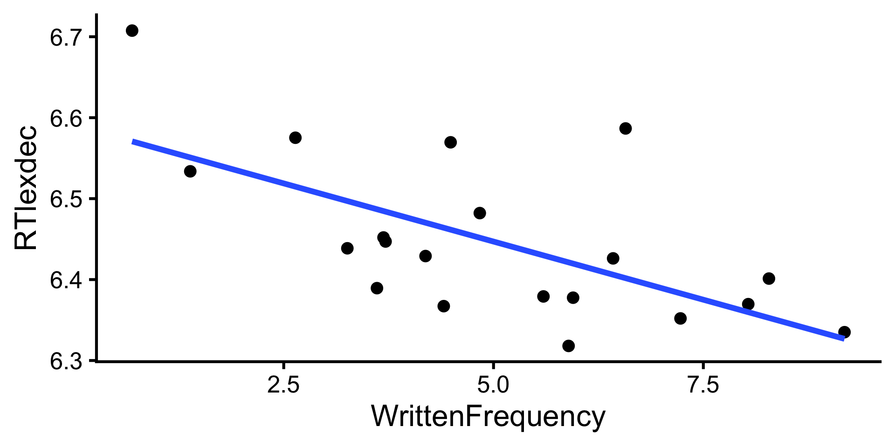
- We can visualize to get a sense of accuracy
- But want to
quantifyaccuracy (determine whether model is useful or how it compares to other models)
Quantifying model accuracy
- sum of squared error (depends on units, difficult to interpret)
- \(R^2\) (independent of units, easy to interpret)
- \(R^2\) quantifies the percentage of variance in the response variable that is explained by the model.
Coefficient of determination, \(R^2\)
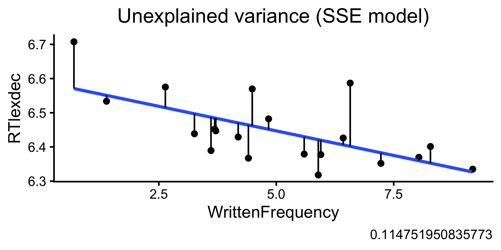- How much error (variation) is left over in the simplest possible model,
RTlexdec ~ 1? This is our reference model and represents the total variance.
Coefficient of determination, \(R^2\)
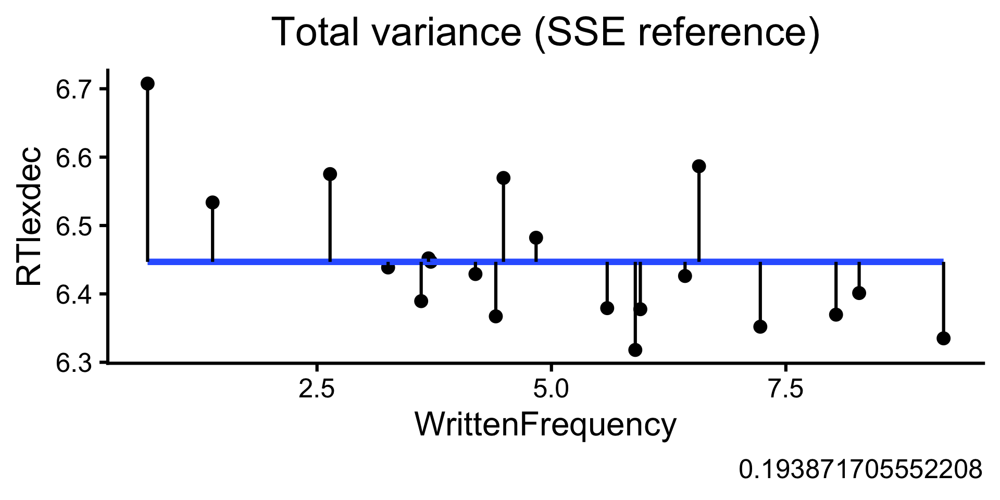- How much error (variation) is left over in our specified model,
RTlexdec ~ 1 + WrittenFrequency?
Coefficient of determination, \(R^2\)
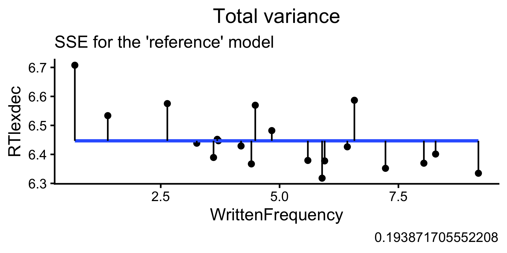
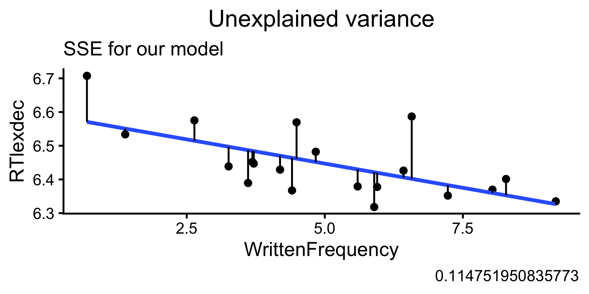
\(R^2=100\times(1-\frac{\sum_{i=1}^n (y_i - m_i)^2}{\sum_{i=1}^n (y_i - \overline{y})^2})\)
\(R^2=100\times(1-\frac{SSE_{model}}{SSE_{reference}})\)
\(R^2=100\times(1-\frac{unexplained \; variance}{total \; variance})\)
Coefficient of determination, \(R^2\)
$R^2=100(1-) = 100 = 0.4081037 $
Coefficient of determination, \(R^2\)
\(R^2=100\times(1-\frac{SSE_{model}}{SSE_{reference}})\)
Call:
lm(formula = RTlexdec ~ 1 + WrittenFrequency, data = young_nouns_sample)
Residuals:
Min 1Q Median 3Q Max
-0.10323 -0.04426 -0.02401 0.03499 0.18496
Coefficients:
Estimate Std. Error t value Pr(>|t|)
(Intercept) 6.590645 0.044550 147.940 < 2e-16 ***
WrittenFrequency -0.028736 0.008157 -3.523 0.00243 **
---
Signif. codes: 0 '***' 0.001 '**' 0.01 '*' 0.05 '.' 0.1 ' ' 1
Residual standard error: 0.07984 on 18 degrees of freedom
Multiple R-squared: 0.4081, Adjusted R-squared: 0.3752
F-statistic: 12.41 on 1 and 18 DF, p-value: 0.00243What is adjusted \(R^2\)?
\(R^2\) overestimates model accuracy
One thing we can ask is how well the model describes our specific sample of data. But the question we actually want to answer is how well does the model we fit describe the population we are interested in.
- The problem is that we usually only have access to the sample we’ve collected and \(R^2\) tends to overestimate the accuracy of the model on the population. In other words, the \(R^2\) of the model we fit on our sample will be larger than the \(R^2\) of the model fit to the population.
- Further, the population is (usually) unknown to us. To quantify the true accuracy of a fitted model – that is, how well the model describes the population, not the sample we collected – we can use a technique called cross-validation.
\(R^2\) overestimates model accuracy
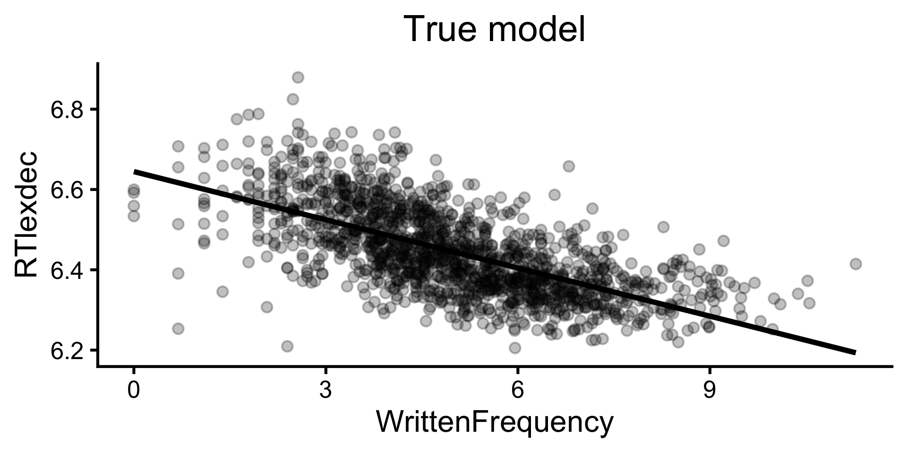
| Population | Sample | |
|---|---|---|
| True | high | |
| Fitted |
\(R^2\) overestimates model accuracy
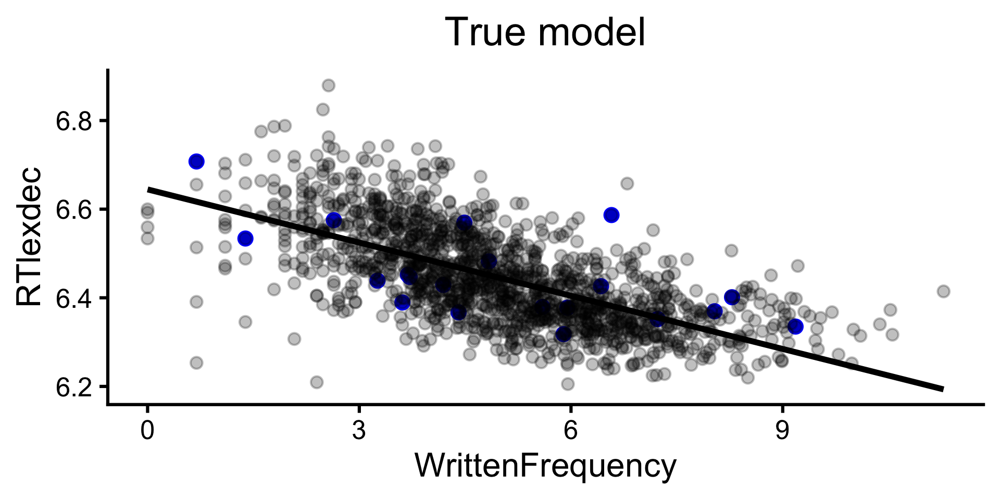
| Population | Sample | |
|---|---|---|
| True | high | high |
| Fitted |
\(R^2\) overestimates model accuracy
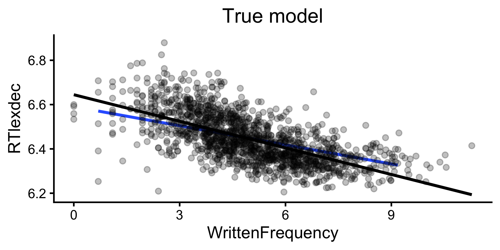
| Population | Sample | |
|---|---|---|
| True | high | high |
| Fitted | low |
\(R^2\) overestimates model accuracy
| Population | Sample | |
|---|---|---|
| True | high | high |
| Fitted | low | very high |
- Accuracy of the fitted model on the sample
overestimates true accuracyof fitted model.
Overfitting
You have the freedom to fit your sample data better and better (you can add more and more terms, increasing the \(R^2\) value). But be careful not to fit the sample data too well.
- any given set of data contains not only the
true model(signal), but also random variation (noise). - Fitting the sample data too well means we fit not only the signal but also the noise in the data.
- An overfit model will perform really well on the data it has been trained on (the sample), but would predict new, unseen values poorly.
- Our goal is to find the
optimal fitted model– the one that gets as close to the true model as possible without overfitting.
Overfitting exercise
- Let’s use the swim records data to demonstrate that \(R^2\) increases as we add more parameters.
Cross-validation justificaiton
- We want to know: how well does the model we fit describe the population we are interested in.
- But we only have the sample, and \(R^2\) on the sample will tend to overestimate the model’s accuracy on the population.
- To estimate the accuracy of the model on the population, we can use
cross-validation
Cross-validation steps
Given a sample of data, there are 3 simple steps to any cross-validation technique:
- Leave some data out
- Fit a model (to the data kept in)
- Evaluate the model on the left out data (e.g. \(R^2\))
There are many ways to do cross-validation — reflecting that there are many ways we can leave some data out — but they all follow this general 3-step process.
Two common cross-validation approaches
- In
leave-one-out cross-validation, we leave out a single data point and use the fitted model to predict that single point. We repeat this process for every data point, then evaluate each model’s prediction on the left out points (we can use \(R^2\)!). - In
k-fold cross-validation, instead of leaving out a single data point, we randomly divide the dataset into \(k\) parts and use the fitted model to predict that part. We repeat this process for every part, then evaluate each model’s prediction on the left out parts (again, we can use \(R^2\)!).
Leave-one-out cross-validation
Figure borrowed from Kendrick Kay
Leave-one-out cross-validation
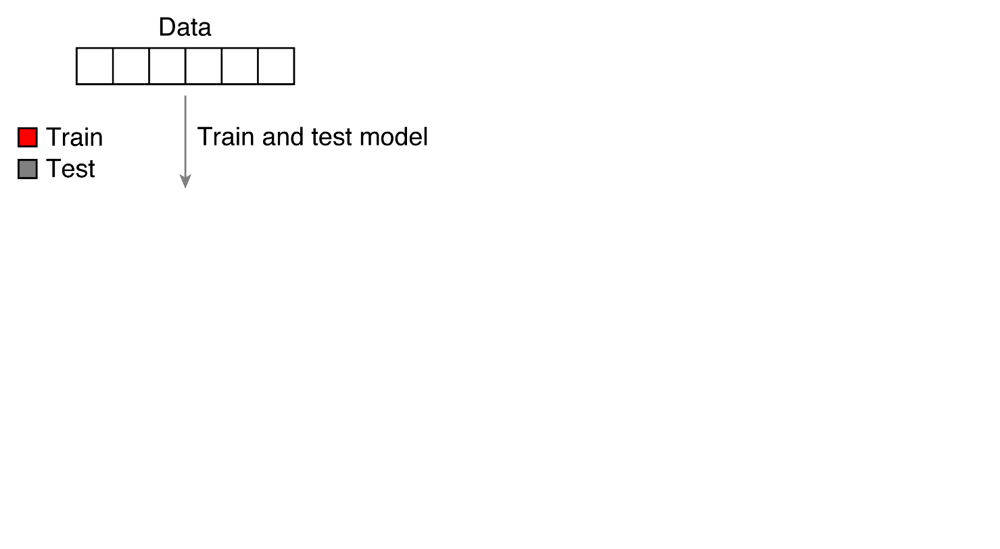Figure borrowed from Kendrick Kay
Leave-one-out cross-validation
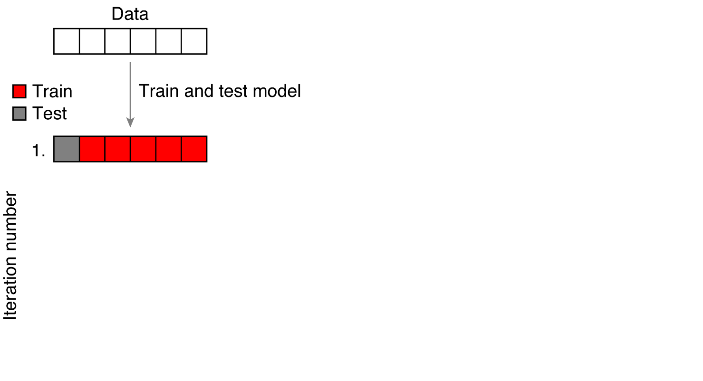Figure borrowed from Kendrick Kay
Leave-one-out cross-validation
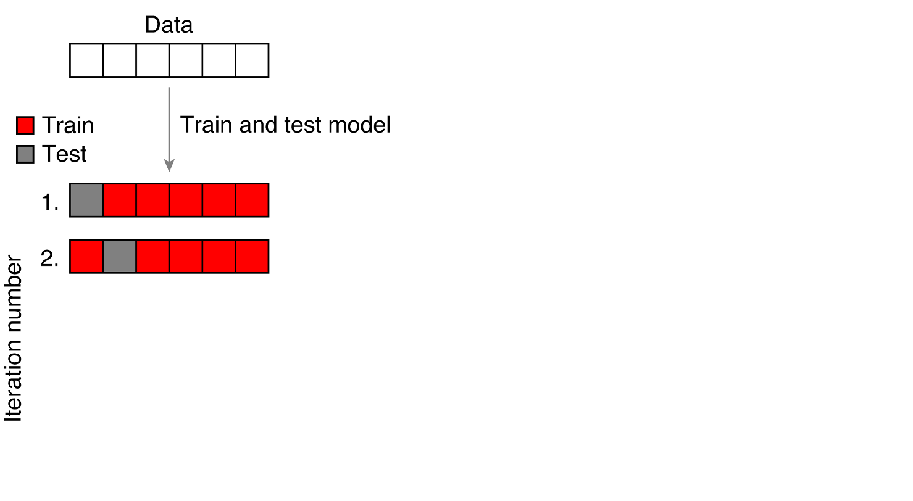Figure borrowed from Kendrick Kay
Leave-one-out cross-validation
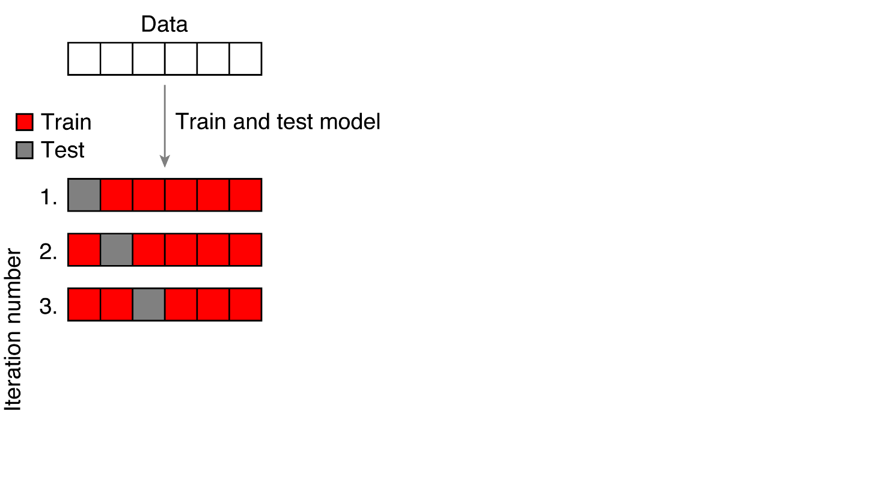Figure borrowed from Kendrick Kay
Leave-one-out cross-validation
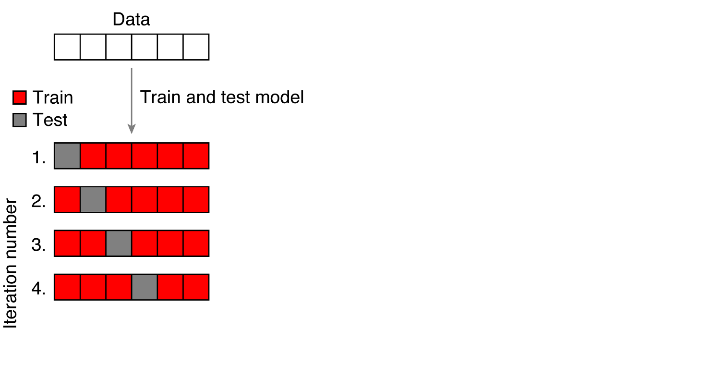Figure borrowed from Kendrick Kay
Leave-one-out cross-validation
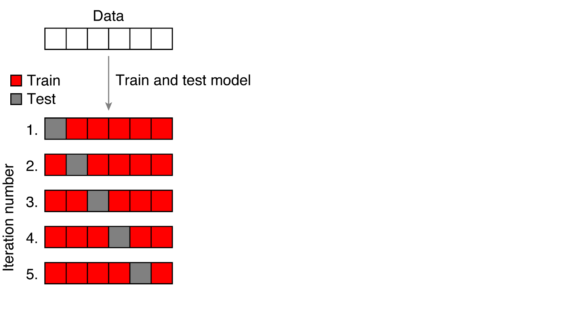Figure borrowed from Kendrick Kay
Leave-one-out cross-validation
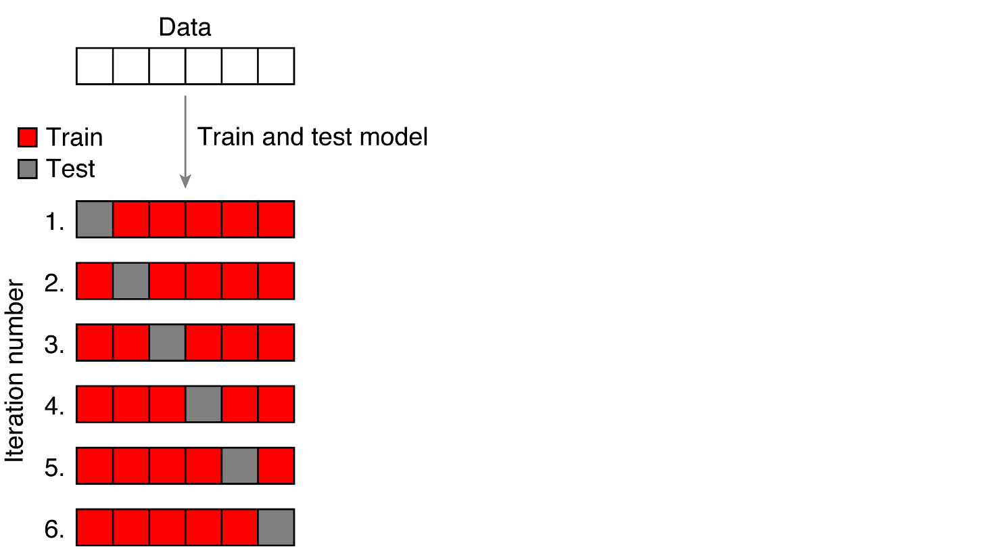Figure borrowed from Kendrick Kay
Leave-one-out cross-validation
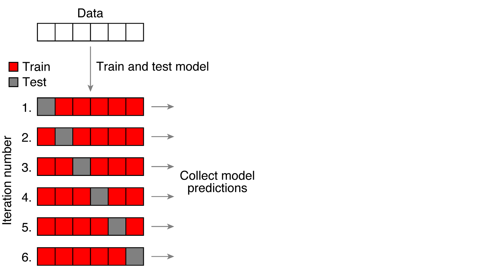Figure borrowed from Kendrick Kay
Leave-one-out cross-validation
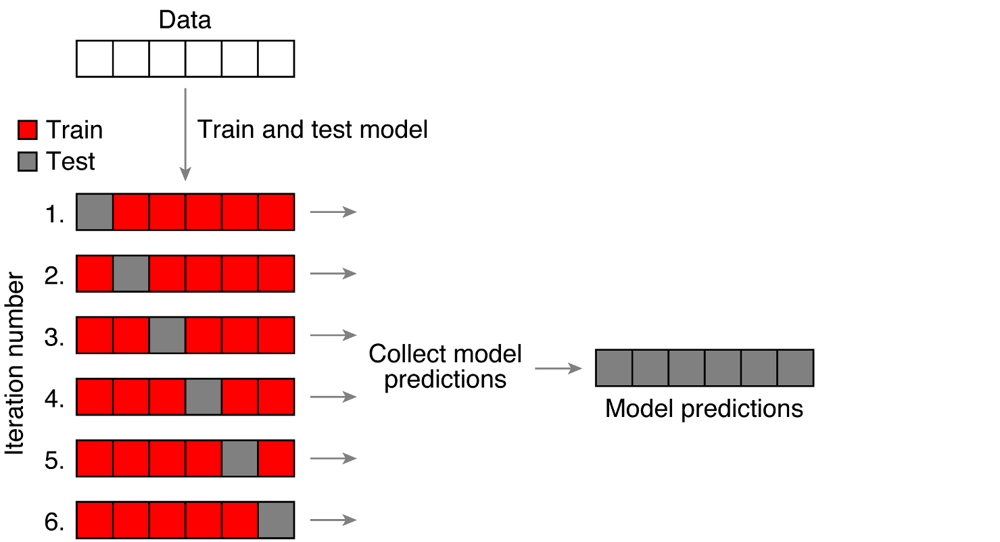Figure borrowed from Kendrick Kay
Leave-one-out cross-validation
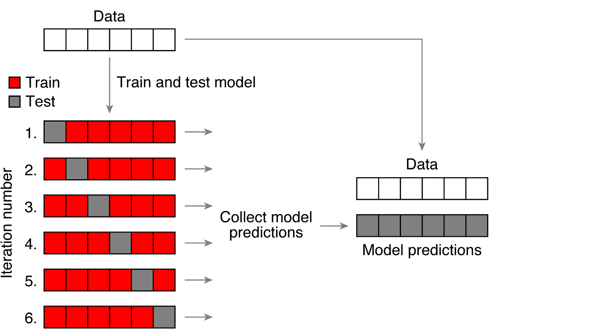Figure borrowed from Kendrick Kay
Leave-one-out cross-validation
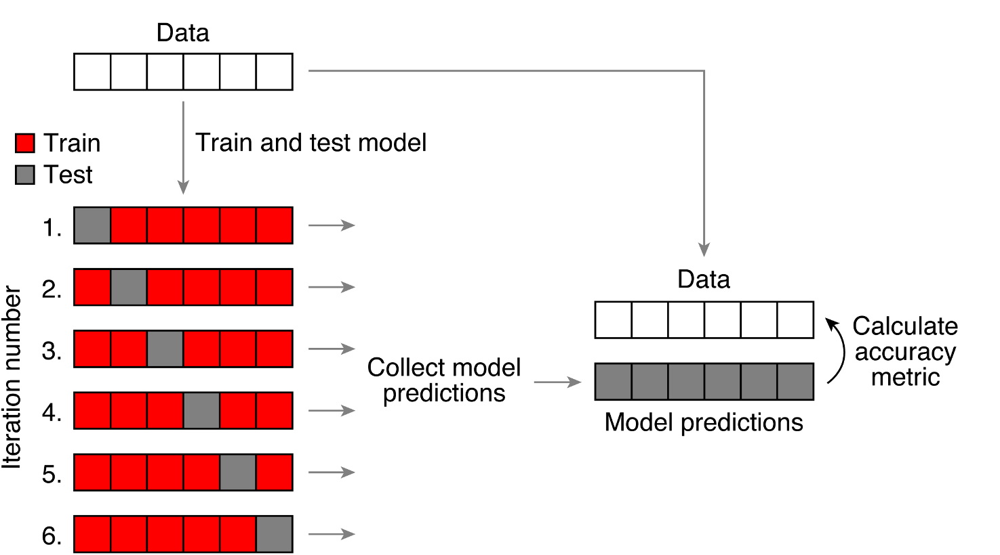Figure borrowed from Kendrick Kay
Thursday
Other methods
There are other ways to evaluate models beyond cross-validaiton. We’ll mention a few more:
- F-test
- AIC (Akaike Information Criterion)
- BIC (Bayesian Information Criterion)
F-test
- One common way is using an F-test to determine whether a more complex model produces a significantly better fit than a simpler one.
- This approach only applies for nested models, which just means that one model is a simpler version of another more complex one.
- We will return to this in the demo.
AIC and BIC
- You may also encounter AIC (Akaike Information Criterion) and BIC (Bayesian Information Criterion).
- These are parametric approaches that attempt to compare different models and find the optimal fit (helping you avoid overfitting and excessively complex models).
AIC and BIC, what’s the difference?
- In general AIC considers how well the model fits the data, the number of parameters, and the sample size (there is a penalty for more complex models); BIC is similar but has a stronger penalty for complex models (so will inherently favor simpler models).
What we’ll demo:
- We’ll focus on cross-validation in this class, because it makes fewer assumptions than metrics like AIC/BIC and is simpler to understand conceptually. But we’ll also show you the F-test approach, since it’s widely used in the sciences.
F-test (via anova())
The F-test is closely related to \(R^2\). When comparing a simpler model to a more complex one, the change in \(R^2\) (often expressed as \(\Delta R^2\)) can be evalutated using an F-test to see if adding predictors significantly improves model fit.
F-test and R^2
- For \(R^2\), when we compared \(SSE_{model}\) (the sum of squared error of our model) to \(SSE_{reference}\) (the sum of squared error of the intercept-only model), we noted that \(SSE_{reference}\) is always going to be greater than \(SSE_{model}\).
- But what we actually want to know is whether it is significantly greater.
Equation for F (in terms of \(R^2\))
Let \(R^2_{simple}\) be the \(R^2\) of the simpler model and \(R^2_{complex}\) be the \(R^2\) of the more complex model. The change in \(R^2\) (also called \(\Delta R^2\)) is:
- \(\Delta R^2 = R^2_{complex} - R^2_{simple}\)
We can then compute the F-statistic to determine if \(\Delta R^2\) is significant.
- \(F = \frac{\Delta R^2 / p }{(1-R^2_{complex}/(n-k-1))}\)
Where:
- \(p\) is the number of additional predictors in the complex model
- \(n\) is the total sample size
- \(k\) is the number of predictors in the complex model
Understanding the F equation
\(F = \frac{\Delta R^2 / p }{(1-R^2_{complex}/(n-k-1))}\)
We can understand the numerator and denominator of this equation in the following way:
- The numerator represents the increase in explained variance per additional predictor.
- The denominator represents the remaining unexplained variance, adjusted for sample size and the complexity of the model.
F-test demo
In R, we can perform this model comparison via and F-test via a call to anova():
model_int <- lm(RTlexdec ~ 1, english)
model_freq <- lm(RTlexdec ~ WrittenFrequency, english)
model_freqage <- lm(RTlexdec ~ WrittenFrequency + AgeSubject, english)
model_freqagelength <- lm(RTlexdec ~ WrittenFrequency + AgeSubject + LengthInLetters, english)
anova(model_int, model_freq, model_freqage, model_freqagelength)Analysis of Variance Table
Model 1: RTlexdec ~ 1
Model 2: RTlexdec ~ WrittenFrequency
Model 3: RTlexdec ~ WrittenFrequency + AgeSubject
Model 4: RTlexdec ~ WrittenFrequency + AgeSubject + LengthInLetters
Res.Df RSS Df Sum of Sq F Pr(>F)
1 4567 112.456
2 4566 91.194 1 21.261 2772.1326 < 2e-16 ***
3 4565 35.053 1 56.141 7319.9087 < 2e-16 ***
4 4564 35.004 1 0.049 6.3563 0.01173 *
---
Signif. codes: 0 '***' 0.001 '**' 0.01 '*' 0.05 '.' 0.1 ' ' 1F-test interpretation
If the F-statistic is large, it suggests that the additional predictors in the complex model significantly improve model fit.
To help you decide, anova() returns a p-value. You can understand this p-value as asking: how likely it is to observe this value of F if we randomly added this many predictors to our model?
Back to model selection
Building models is itself an iterative process: we can use model accuracy obtained via cross-validation to determine which model to select (as a way to find the elusive optimal model fit).
Beyond model accuracy, there are other practical things one might want to consider when selecting a model, such as ease of interpretation and availability of resources (the data you can collect, the computing power you have, etc.)
Announcements
- No pset 05 (due to off week!); pset 06 will have a few extra challenge questions in case you want them
- pset 04 solutions posted tomorrow morning! (turn it in if you haven’t!)
- Practice exam 02 posted by Friday at midnight!
You are here
Data science with R
- Hello, world!
- R basics
- Data visualization
- Data wrangling
Stats & Model buidling
- Sampling distribution
- Hypothesis testing
- Model specification
- Model fitting
- Model accuracy
Model reliability
More advanced
- Classification
- Inference for regression
- Mixed-effect models
Model building overview
- Model specification: what is the form?
- Model fitting: you have the form, how do you guess the free parameters?
- Model accuracy: you’ve estimated the parameters, how well does that model describe your data?
Model reliability: when you estimate the parameters, there is some uncertainty on them
Dataset
Explore the data
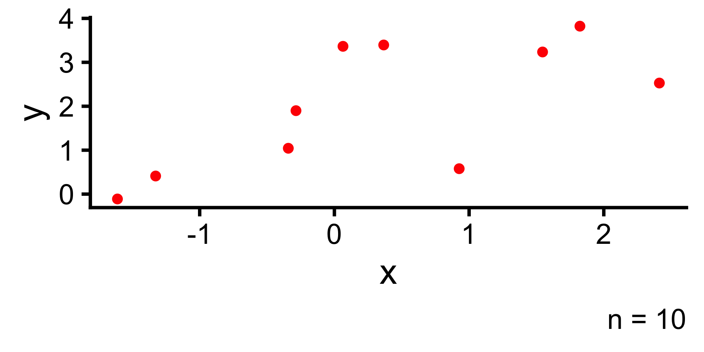
Specify a model
- supervised learning | regression | linear
y ~ x- \(y=w_0+w_1x_1\)
Model reliability asks:
How certain can we be about the parameter estimates we obtained?
# A tibble: 2 × 2
term estimate
<chr> <dbl>
1 intercept 1.75
2 x 0.733But… why is there uncertainty around the parameter estimates at all?
Because of sampling error
We are interested in the model parameters that best describe the population from which the sample was drawn (not a given sample)
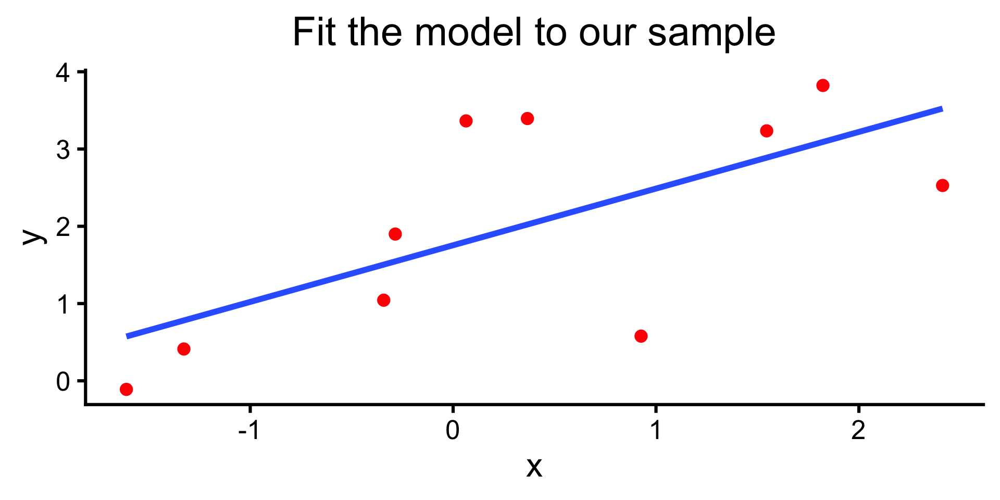
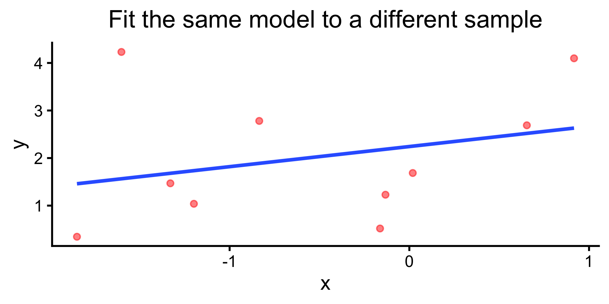
- Due to sampling error, we can expect some variability in the model parameters that describe a sample of data.
Model reliability
- We can think of model reliability as the stability of the parameters of a fitted model.
- The more data we collect, the more reliable the model parameters will be.
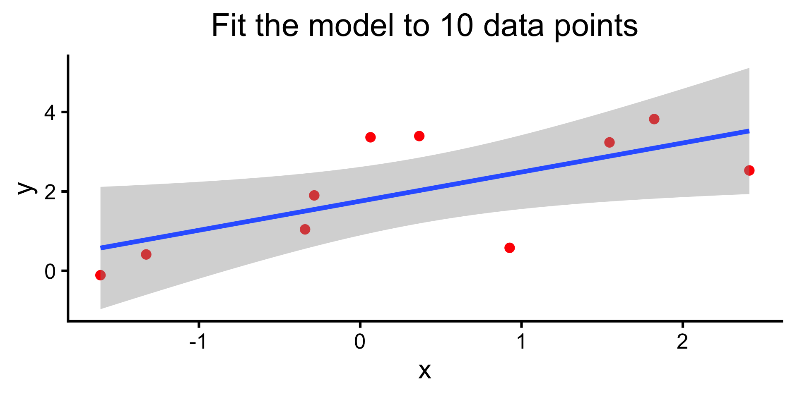
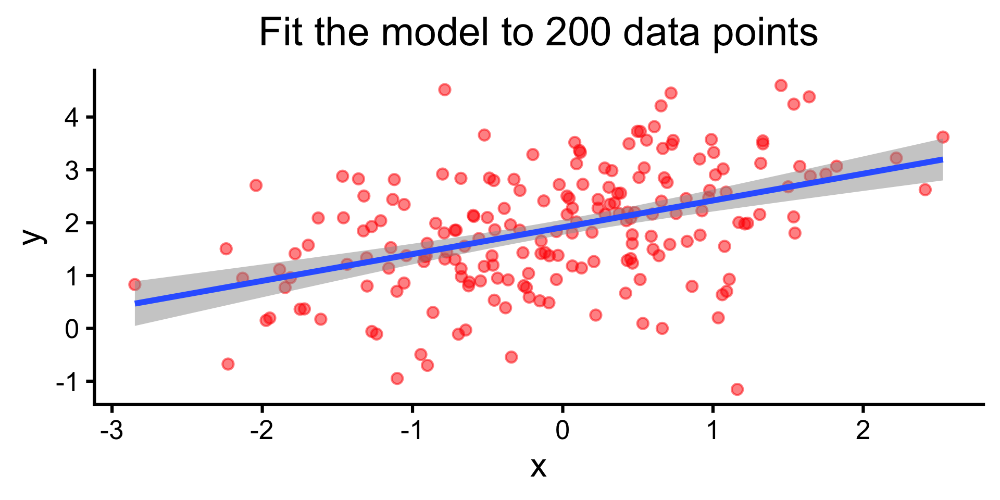
Confidence intervals via bootstrapping
We can obtain confidence intervals around parameter estimates for models in the same we we did for point estimates like the mean: bootstrapping
- Draw bootstrap samples from the observed data
- Fit the model of interest to each bootstrapped sample
- Construct the sampling distribution of parameter estimates across bootstraps
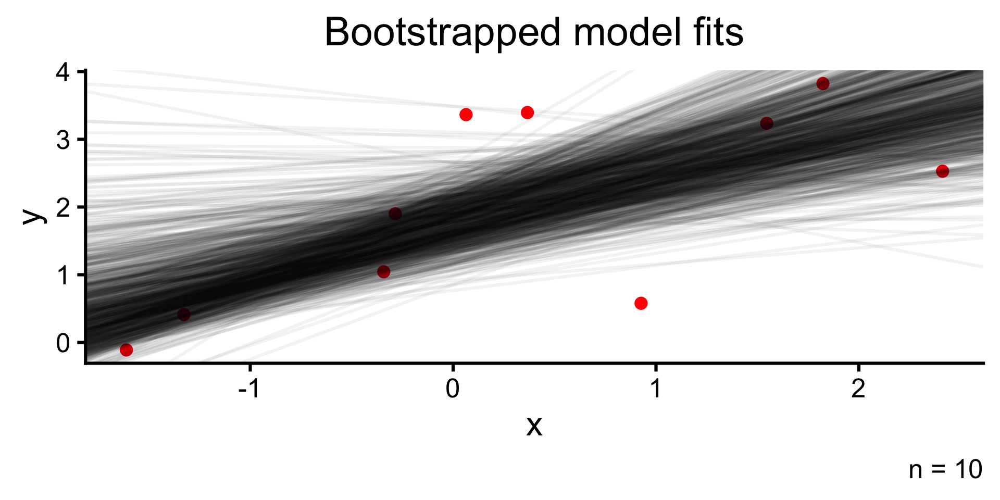
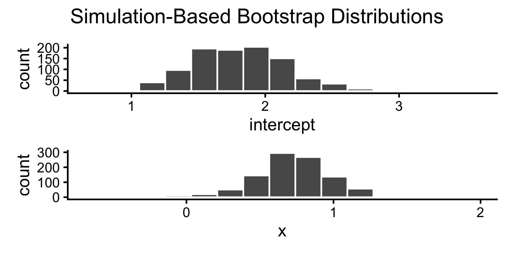
The more data we collect, the more reliable
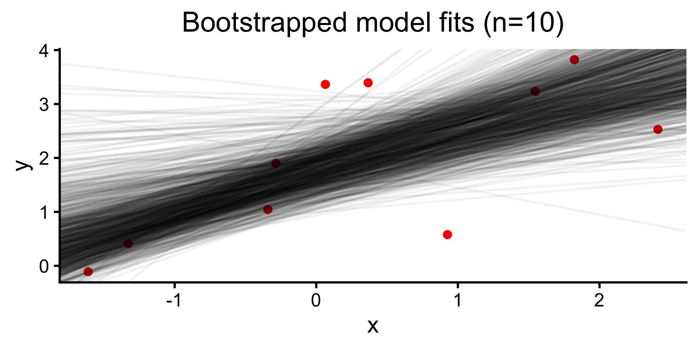
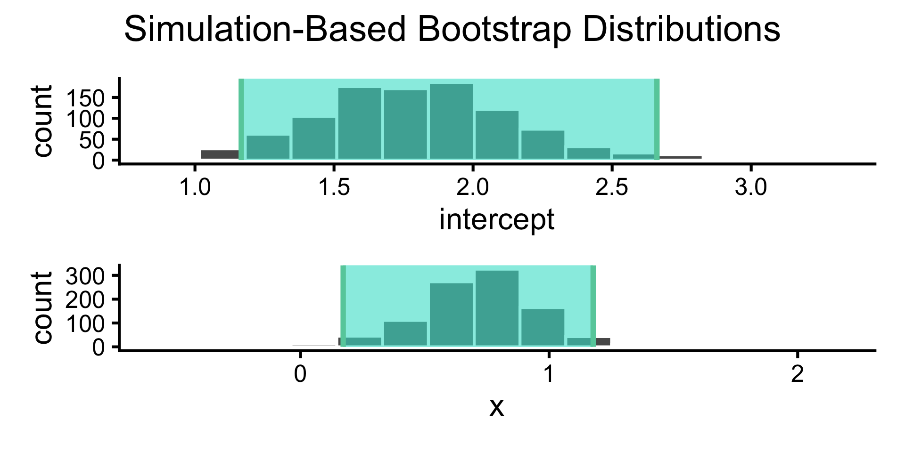
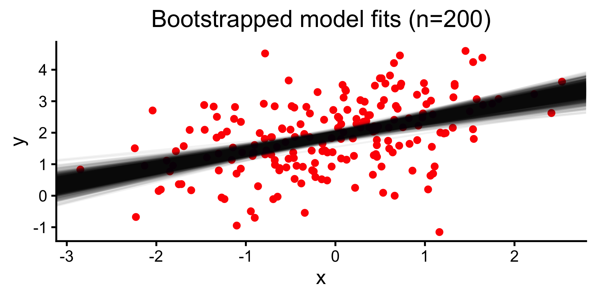
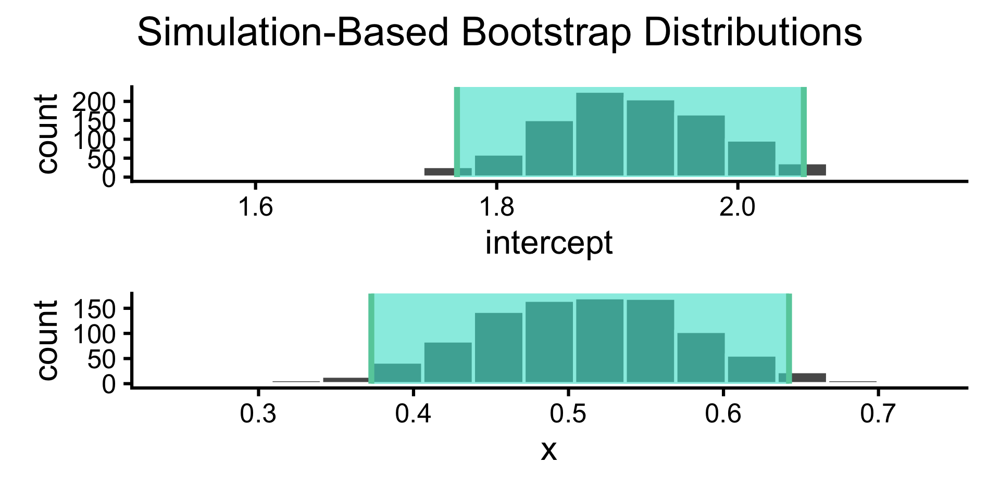
The more data we collect, the more reliable
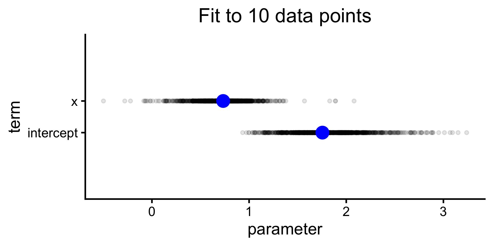
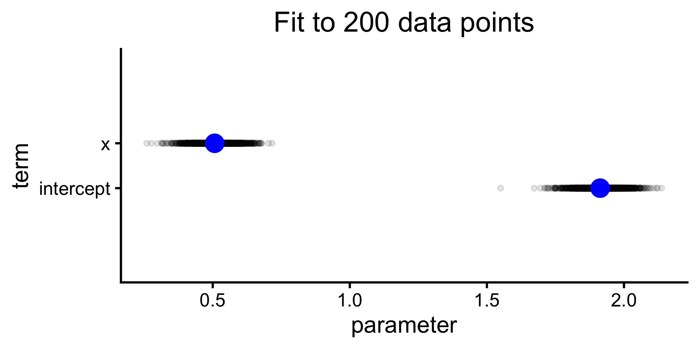
Confidence intervals with infer
Fit bootstraps
Get confidence interval
Accuracy v. Reliability
Model acuracy and model reliability are closely related concepts in model building, but they aren’t the same.
- Accuracy refers to how close a model’s predictions are to the true values we want to predict.
- Reliability, is about the model’s stability—how consistent the model’s parameters and outputs are when new data is sampled.
Accuracy v. Reliability

- Reliable and accurate: The model is both close to the true model and stable across different samples. This is the ideal case, indicating we have enough data to produce both a precise and consistent model fit.
Accuracy v. Reliability
- Reliable but inaccurate: The model parameters are stable across samples, meaning it’s reliable, but it’s far from the true model. This could happen if our model is structurally limited or misses some aspect of the data, even if we have plenty of data for stable estimates.
Accuracy v. Reliability
- Unreliable but accurate: This situation is unlikely. Without enough data, the model’s predictions will fluctuate widely from sample to sample, making it hard to consistently approximate the true model. So, without reliability, achieving accuracy is improbable.
Accuracy v. Reliability
- Unreliable and inaccurate: Here, the model’s estimates are unstable and far from the true model. This could be due to either insufficient data or an inappropriate model choice that doesn’t match the data’s structure. With limited data, it’s hard to tell which factor is to blame.
Accuracy v. Reliability